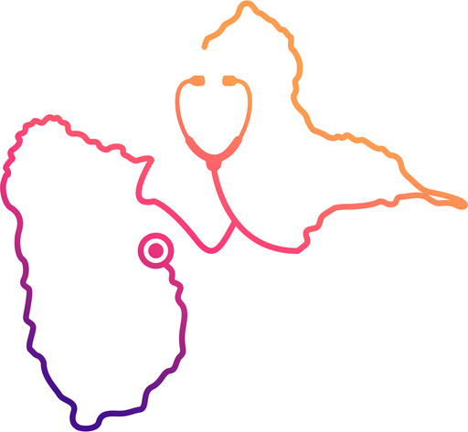

Test GPS
Précision de la localisation dans le service
Ce test mesure si le GPS de votre téléphone est assez précis à l'intérieur du nouveau bâtiment pour situer quelqu'un sur le plan.
Rien n'est envoyé. Les mesures restent sur ce téléphone et ne sont visibles par personne d'autre.
Comment faire le test (2 minutes à lire)
- Réglez le téléphone :
- iPhone : Réglages, Confidentialité, Service de localisation, votre navigateur, cocher Lorsque l'app est active et activer Position exacte.
- Android : Localisation activée, Précision de la localisation Google activée, Wi‑Fi allumé (même sans être connecté).
- Appuyez sur Démarrer la mesure et acceptez la demande de localisation.
- À chaque endroit testé, restez immobile 30 secondes, puis appuyez sur Noter cet endroit.
- Testez 6 à 10 endroits variés : chambre côté façade, couloir central, poste de soins, près d'un patio, ascenseurs, Mahogany…
- À la fin, appuyez sur Copier les résultats et collez‑les dans la conversation avec Claude.
– m
Mesure à l'arrêt
Précision annoncée par le téléphone : rayon dans lequel vous vous trouvez probablement.
–Le point bouge de… (sur 30 s, à l'arrêt)
0Mesures reçues
Cercles : 5, 10, 20 et 40 mCarré central : 1 chambre (4 m)
Noter cet endroit
Démarrez la mesure et restez immobile au moins 15 secondes.
Résultats
Aucun endroit noté pour l'instant.